Actual four-phase geology reviewActual production river: every joined shape
All28 native1280/1600 views directly inspected. This fixture uses the production renderer without a drawing override. Bed4.6; current joined shapes4.5 provisional. Actual viewport inputs check dry isolated components, source-connected wetting, corners, T branches, crosses, loops, JSON restore and single earned completion.
Written scores and exact hashes · 1280 corrected marker receipt · 1600 corrected marker receipt. First wrapper false-failure receipts remain preserved. Actor/room/full timed action/device/child/owner acceptance is separate.
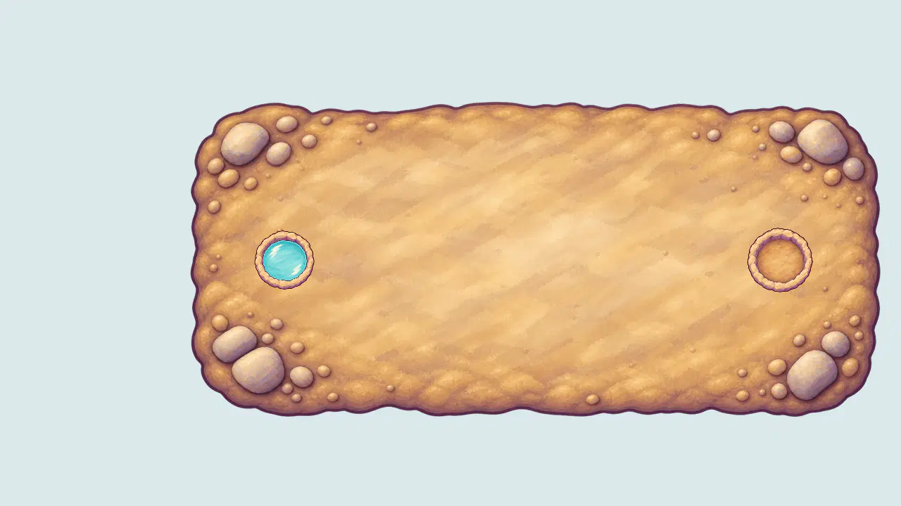
1280 · dry_initialDirect native actual-renderer review: painted earth and rounded excavation/source bowls remain clear. No joined network at this state.
92b3789806f2c8a839f0453dee43be97e27b6019684bee1677a7324aa1563c10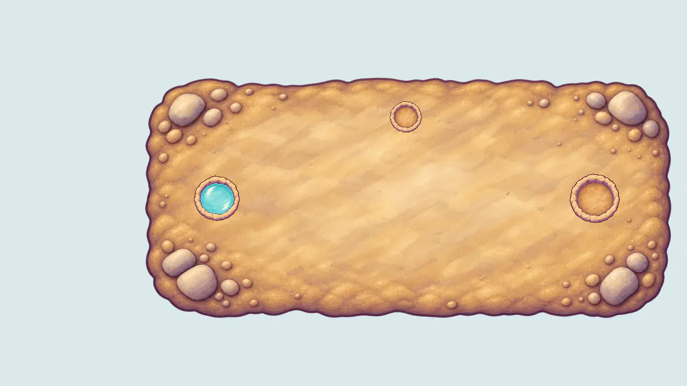
1280 · isolated_dryDirect native actual-renderer review: painted earth and rounded excavation/source bowls remain clear. No joined network at this state.
19de893fee5be372a35cda7fed4207663581adf323b9a392720aa0fce394702e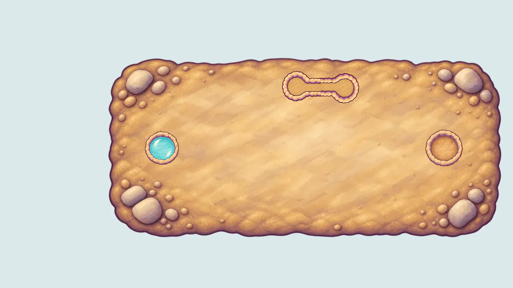
1280 · isolated_dry_straightDirect native actual-renderer review: painted earth and rounded excavation/source bowls remain clear. Continuous open ports keep the actual corner/T/cross/loop topology readable; small bank/value steps remain an inclusive4.5 provisional priority.
4c697005dad5fe6cc67bc36e499be296d29063dae9e908b6e07d1379406039d5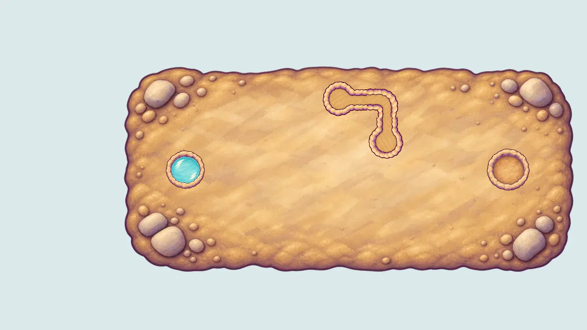
1280 · isolated_dry_cornerDirect native actual-renderer review: painted earth and rounded excavation/source bowls remain clear. Continuous open ports keep the actual corner/T/cross/loop topology readable; small bank/value steps remain an inclusive4.5 provisional priority.
e6bc8d7df3a6e94149cccc0d129f56fb80a8220bb9d7631e067d8595d78664b7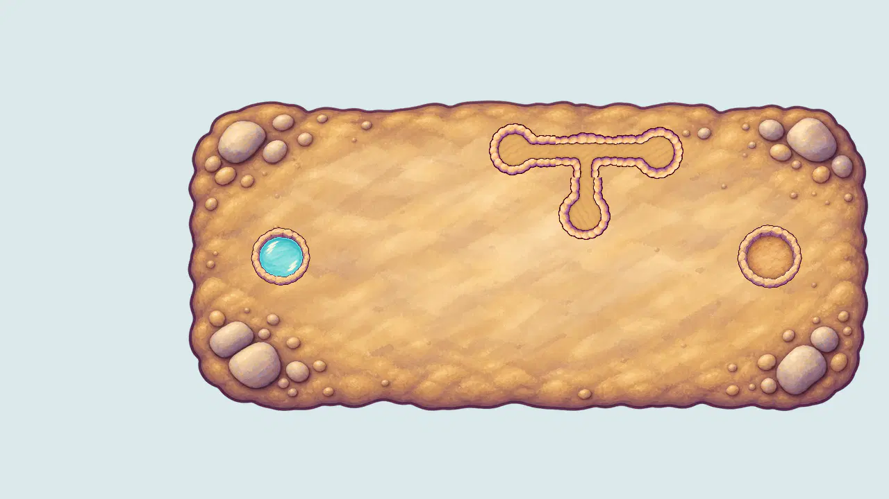
1280 · isolated_dry_tDirect native actual-renderer review: painted earth and rounded excavation/source bowls remain clear. Continuous open ports keep the actual corner/T/cross/loop topology readable; small bank/value steps remain an inclusive4.5 provisional priority.
763436fd33684462b3b19c0a01995b9b76ff707a70f5f2de54b39e3cc885a79a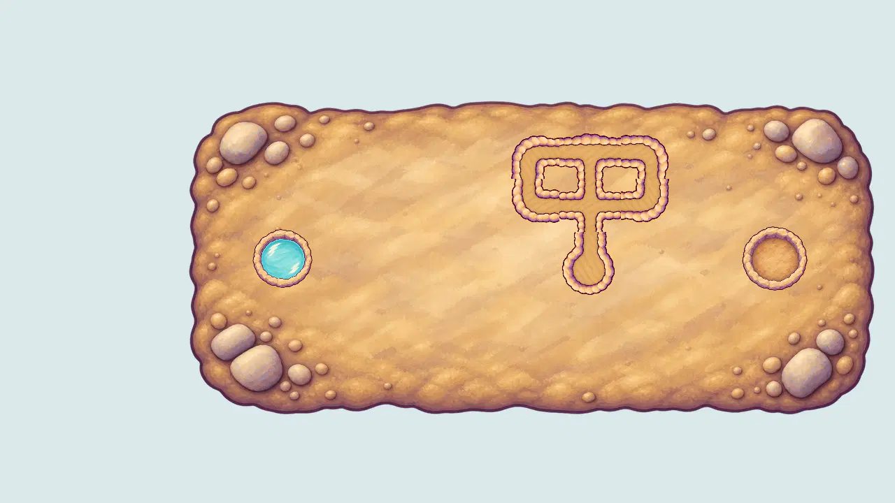
1280 · isolated_dry_crossDirect native actual-renderer review: painted earth and rounded excavation/source bowls remain clear. Continuous open ports keep the actual corner/T/cross/loop topology readable; small bank/value steps remain an inclusive4.5 provisional priority.
89308a144ad42c87c017733c0917d39e85d7a0bd856468a9916c8a507e61821b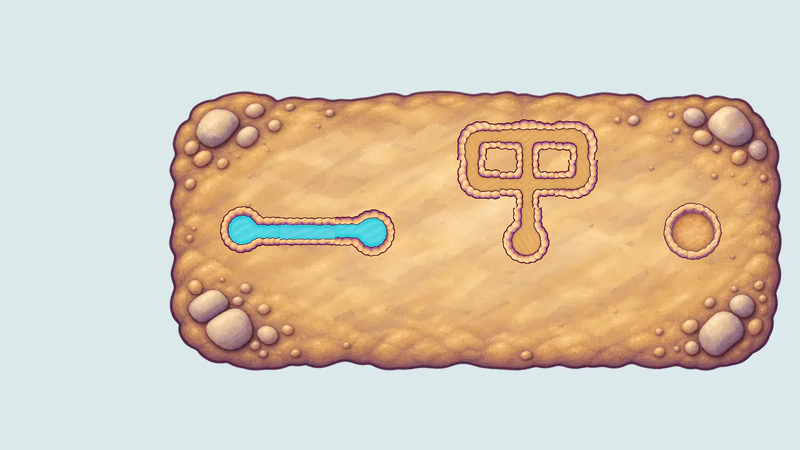
1280 · connected_straightDirect native actual-renderer review: painted earth and rounded excavation/source bowls remain clear. Continuous open ports keep the actual corner/T/cross/loop topology readable; small bank/value steps remain an inclusive4.5 provisional priority.
b5bf7fb1ca3df4f9caaf3d24ba072739b40c15fa94ce5cbdfb368dcba59b0da1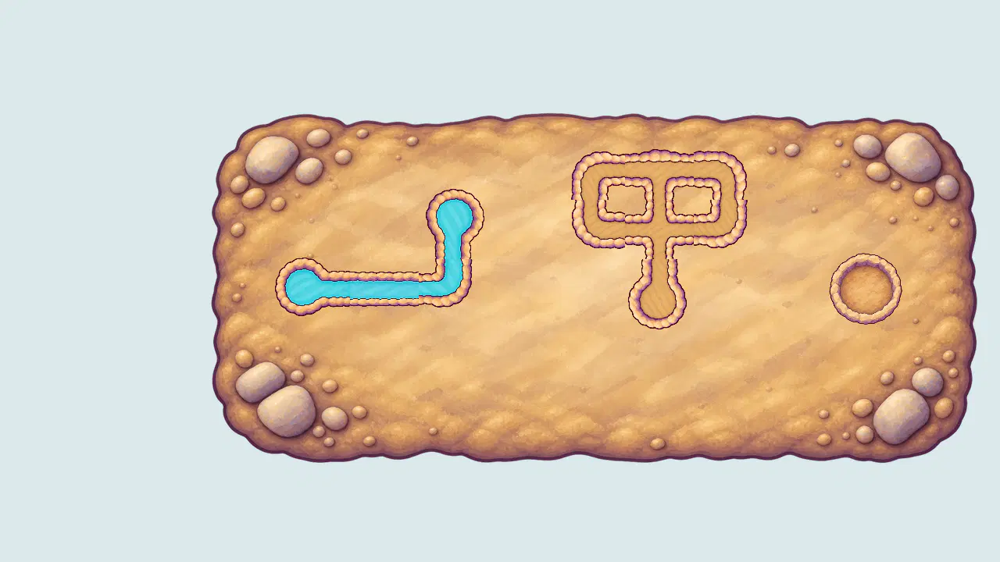
1280 · connected_cornerDirect native actual-renderer review: painted earth and rounded excavation/source bowls remain clear. Continuous open ports keep the actual corner/T/cross/loop topology readable; small bank/value steps remain an inclusive4.5 provisional priority.
572e088bef9bd1b24546e945849ef19bbf7f27c68f6e760147edbed0fcda5dad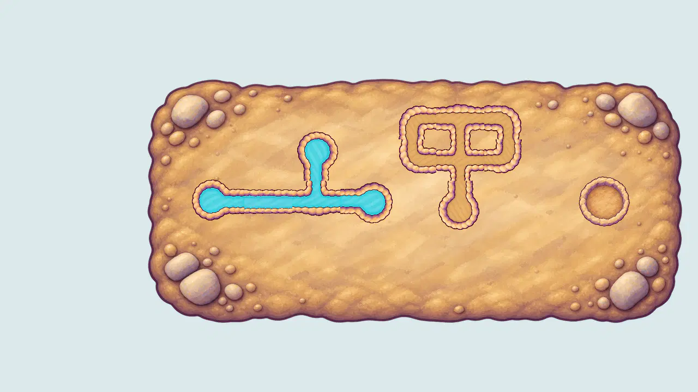
1280 · connected_t_branchDirect native actual-renderer review: painted earth and rounded excavation/source bowls remain clear. Continuous open ports keep the actual corner/T/cross/loop topology readable; small bank/value steps remain an inclusive4.5 provisional priority.
29aab8e15a1c85aea67edb0bae6106bcbe5b7d84ac7d6f9c2313b680a3567d98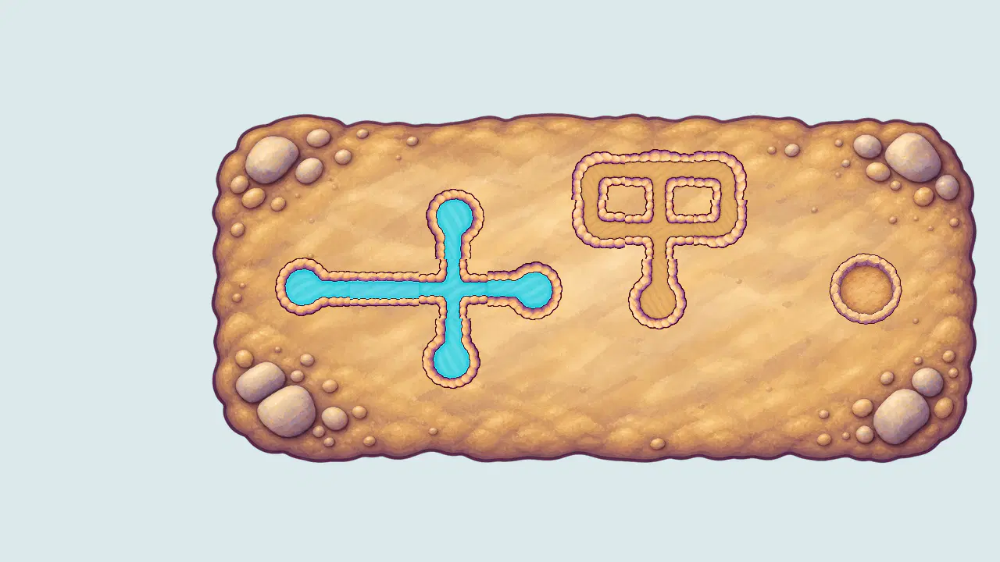
1280 · connected_crossDirect native actual-renderer review: painted earth and rounded excavation/source bowls remain clear. Continuous open ports keep the actual corner/T/cross/loop topology readable; small bank/value steps remain an inclusive4.5 provisional priority.
3e0b538c111254fbcaf7b3e3661c86c782a9281bba20bdd9761175ff0c3c8b56 1280 · partial_json_restored
1280 · partial_json_restoredDirect native actual-renderer review: painted earth and rounded excavation/source bowls remain clear. Continuous open ports keep the actual corner/T/cross/loop topology readable; small bank/value steps remain an inclusive4.5 provisional priority.
3e0b538c111254fbcaf7b3e3661c86c782a9281bba20bdd9761175ff0c3c8b56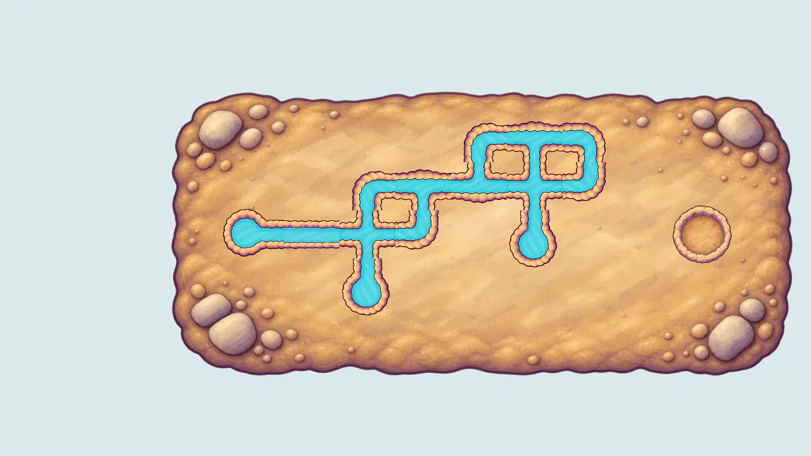
1280 · formerly_isolated_now_wetDirect native actual-renderer review: painted earth and rounded excavation/source bowls remain clear. Continuous open ports keep the actual corner/T/cross/loop topology readable; small bank/value steps remain an inclusive4.5 provisional priority.
1f28dbd80fd26c8d1e29865eed5f288827c38d53aeacf7135fcf405d29ec115e1280 · connected_completeDirect native actual-renderer review: painted earth and rounded excavation/source bowls remain clear. Continuous open ports keep the actual corner/T/cross/loop topology readable; small bank/value steps remain an inclusive4.5 provisional priority.
ffec02e6f284b135139f6a899253bea4a953b5f97cf7c7b1647f721dabc4033c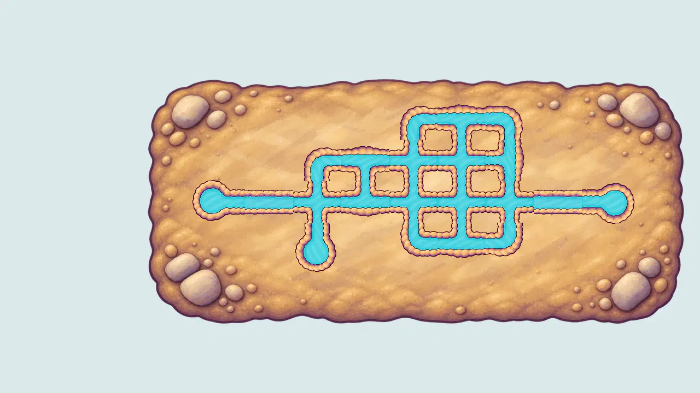
1280 · quiet_single_completionDirect native actual-renderer review: painted earth and rounded excavation/source bowls remain clear. Continuous open ports keep the actual corner/T/cross/loop topology readable; small bank/value steps remain an inclusive4.5 provisional priority.
f8a7be0eafe5f04d7d0131d9b83daafbdefab91fc4c3534326190c234dfa84e1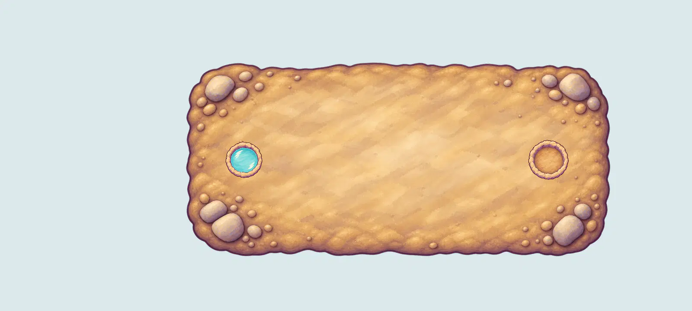
1600 · dry_initialDirect native actual-renderer review: painted earth and rounded excavation/source bowls remain clear. No joined network at this state.
1bf84b899c5e3aea7db9f709ea3398f766ede73fd54e47f06a5739a4f09333ee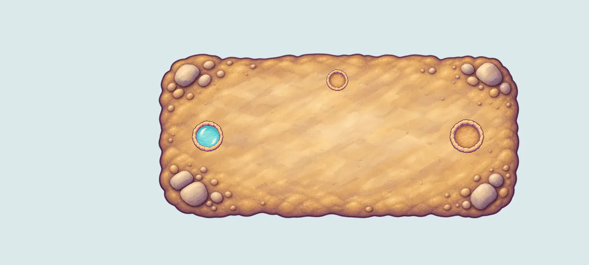
1600 · isolated_dryDirect native actual-renderer review: painted earth and rounded excavation/source bowls remain clear. No joined network at this state.
98cdd86b7a16e0c7cf630823575450ccd9788238c7e22882fd915a64f9caa3ba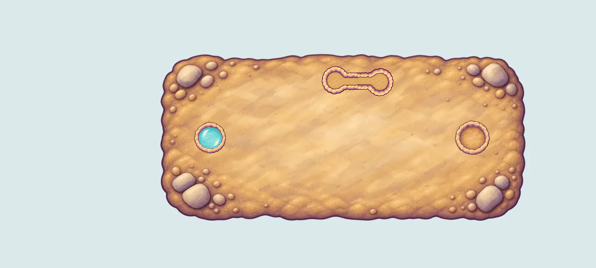
1600 · isolated_dry_straightDirect native actual-renderer review: painted earth and rounded excavation/source bowls remain clear. Continuous open ports keep the actual corner/T/cross/loop topology readable; small bank/value steps remain an inclusive4.5 provisional priority.
60b5407f5140cd50718f4582dad82bb9fed33ed5e49604ca51dfb01faa199222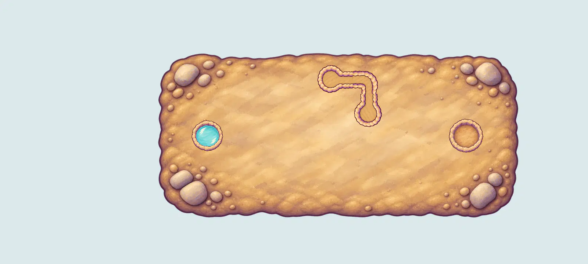
1600 · isolated_dry_cornerDirect native actual-renderer review: painted earth and rounded excavation/source bowls remain clear. Continuous open ports keep the actual corner/T/cross/loop topology readable; small bank/value steps remain an inclusive4.5 provisional priority.
4a0c386cd64f0d94b5c6e28eac55a44207a3116c3da437d742ecb16b7cf5ad7e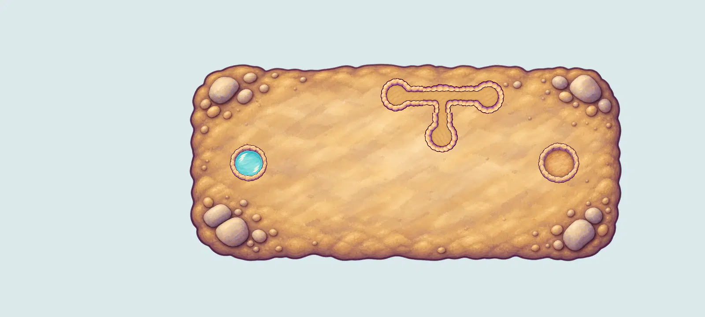
1600 · isolated_dry_tDirect native actual-renderer review: painted earth and rounded excavation/source bowls remain clear. Continuous open ports keep the actual corner/T/cross/loop topology readable; small bank/value steps remain an inclusive4.5 provisional priority.
6956a9e748f4ad266f645ed3bdb649439f2077e0f604d20a1054bfb9b989a612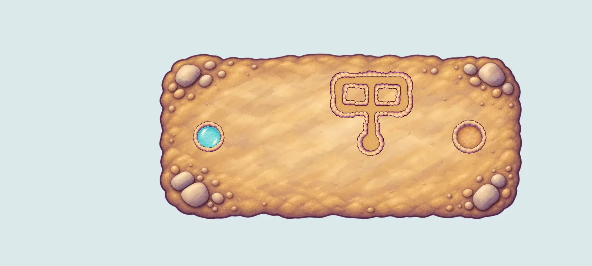
1600 · isolated_dry_crossDirect native actual-renderer review: painted earth and rounded excavation/source bowls remain clear. Continuous open ports keep the actual corner/T/cross/loop topology readable; small bank/value steps remain an inclusive4.5 provisional priority.
44fc21d00e26268a16bd8509124eda8ec758dcbf6a86851f82ab6d9af19f8803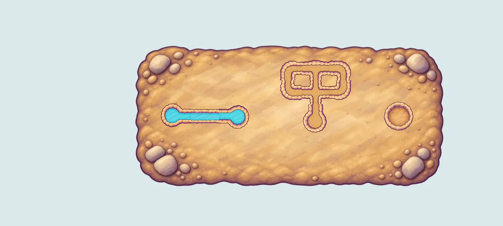
1600 · connected_straightDirect native actual-renderer review: painted earth and rounded excavation/source bowls remain clear. Continuous open ports keep the actual corner/T/cross/loop topology readable; small bank/value steps remain an inclusive4.5 provisional priority.
3c10e3499a8ec48cdec7ce78184ec4cb949f526b170f93a57f6dcdf5061d0d1c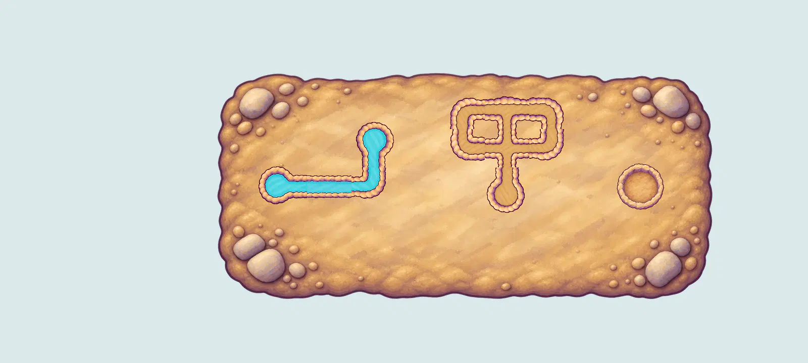
1600 · connected_cornerDirect native actual-renderer review: painted earth and rounded excavation/source bowls remain clear. Continuous open ports keep the actual corner/T/cross/loop topology readable; small bank/value steps remain an inclusive4.5 provisional priority.
15b7d18473b57e4856e585e318dc02f3e82b6608fc114a6256b21d03db7e882c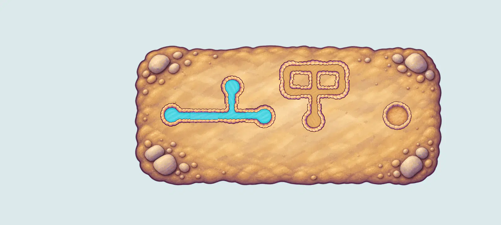
1600 · connected_t_branchDirect native actual-renderer review: painted earth and rounded excavation/source bowls remain clear. Continuous open ports keep the actual corner/T/cross/loop topology readable; small bank/value steps remain an inclusive4.5 provisional priority.
21d855ec12828bd9b031685f26691c7f2469ca5cdeac653f12ae8fab19106717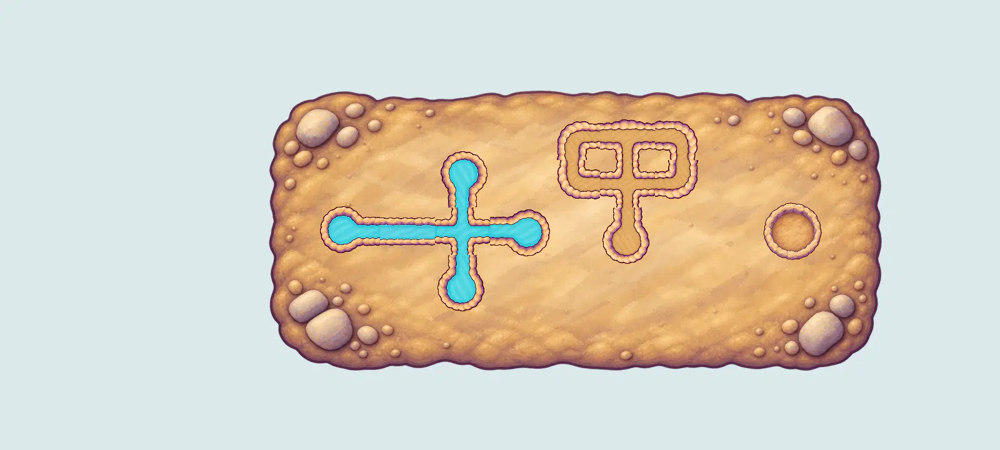
1600 · connected_crossDirect native actual-renderer review: painted earth and rounded excavation/source bowls remain clear. Continuous open ports keep the actual corner/T/cross/loop topology readable; small bank/value steps remain an inclusive4.5 provisional priority.
ba9c772565edfc5fc86210472be8b260c677ccbd5ae6d0b8ed9f34088b119dd3 1600 · partial_json_restored
1600 · partial_json_restoredDirect native actual-renderer review: painted earth and rounded excavation/source bowls remain clear. Continuous open ports keep the actual corner/T/cross/loop topology readable; small bank/value steps remain an inclusive4.5 provisional priority.
ba9c772565edfc5fc86210472be8b260c677ccbd5ae6d0b8ed9f34088b119dd3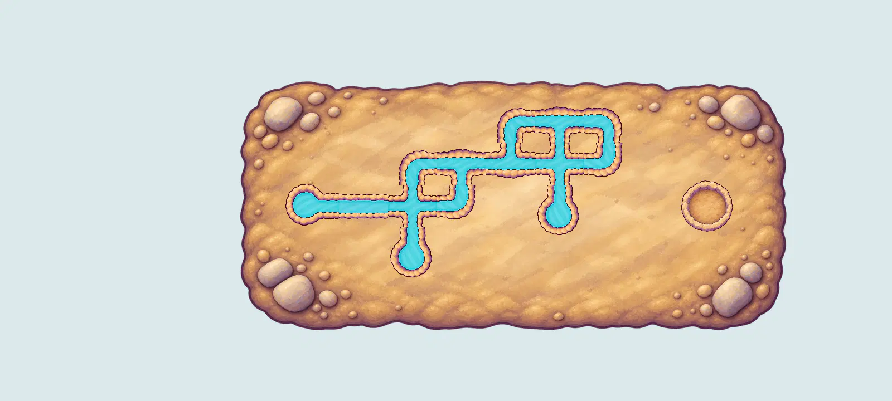
1600 · formerly_isolated_now_wetDirect native actual-renderer review: painted earth and rounded excavation/source bowls remain clear. Continuous open ports keep the actual corner/T/cross/loop topology readable; small bank/value steps remain an inclusive4.5 provisional priority.
2b9bfc0eb499c2dc1098c1cd28ef7c79cfe9e0412783835ef5746559590535ed1600 · connected_completeDirect native actual-renderer review: painted earth and rounded excavation/source bowls remain clear. Continuous open ports keep the actual corner/T/cross/loop topology readable; small bank/value steps remain an inclusive4.5 provisional priority.
864c40a7e6a0c5823573fbb6cb2ad33ba31634c7947ce99a7cae4f1bd8ba736d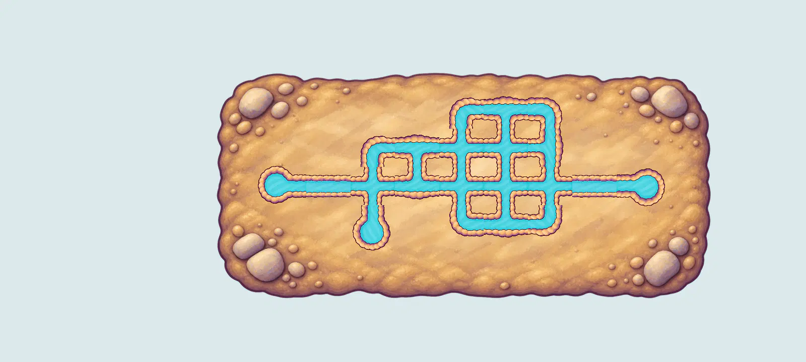
1600 · quiet_single_completionDirect native actual-renderer review: painted earth and rounded excavation/source bowls remain clear. Continuous open ports keep the actual corner/T/cross/loop topology readable; small bank/value steps remain an inclusive4.5 provisional priority.
6e4b94a84c561077f3723210ba04f1cbdd6bb8640d0ea1f86d07b1832a351929